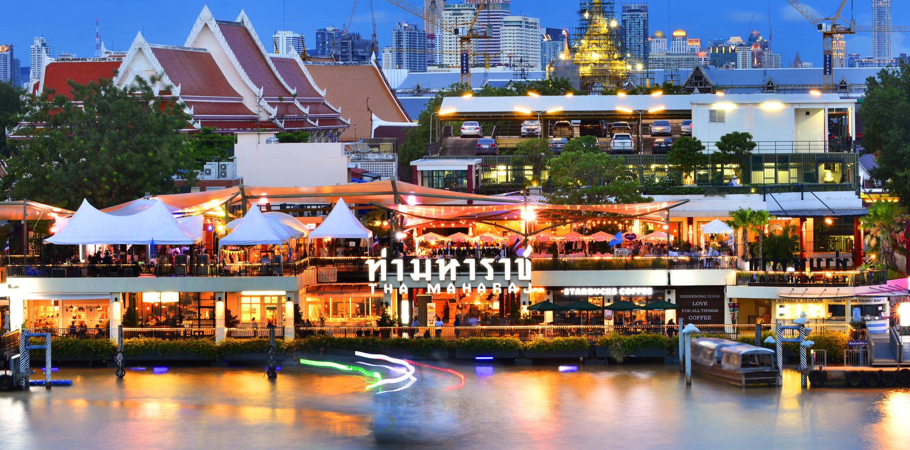
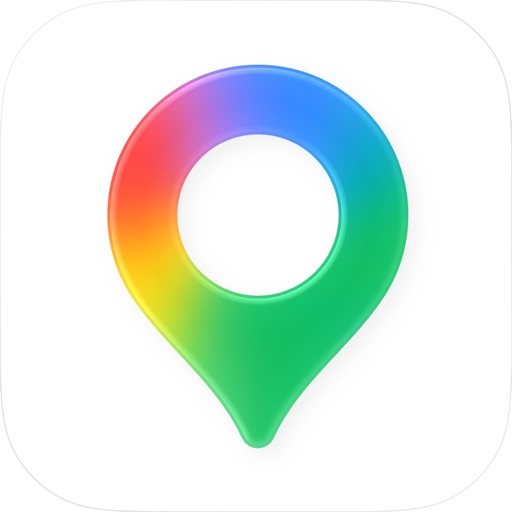

已购机票
尚未录入机票凭证
保存新的图片或链接后，将覆盖当前全部机票记录。

ITINERARY
在暹罗看展，从凌晨半马跑向老城，再沿嵩越路和石龙军路逛吃。
尚未录入机票凭证
保存新的图片或链接后，将覆盖当前全部机票记录。
乘CZ8075于11:10抵达BKK；11:10—12:15完成入境和B层换汇，国内提前买好电话卡，不排机场取卡；12:15从B层机场快线站出发。
素万那普机场BKK → QSNCC领物点 → Hotel Sapin
国内提前购买电话卡，按3天22元计入预算。
本次不安排机场取卡，入境后直接到B层换汇和乘机场快线。
入境后下到B层，沿Airport Rail Link标识去换汇柜台。
把人民币现金换成泰铢时，比较各柜台CNY的Buy／Buying价，同面额选数值较高的一家。
12:15从B层乘机场快线，经Makkasan／Phetchaburi换MRT蓝线去QSNCC。
Phetchaburi BL21 → Sukhumvit BL22 → Queen Sirikit National Convention Centre BL23，往Lak Song方向；3号出口直达会展中心。预计60分钟，含候车、换乘和步行；两套系统分开购票。
汽车直达道路参考34分钟；少走路备选从一楼4号门Grab上车区出发，机场计价出租车另收50泰铢机场费及高速费。
机场快线到Makkasan，步行换MRT Phetchaburi，乘蓝线到QSNCC站3号出口；13:15午餐、14:00—15:00领物，随后乘蓝线到Hua Lamphong，步行回Hotel Sapin，15:45入住。 [2]
通过TDAC移民局官网免费填写并保存回执；下方按本次飞机抵达行程列出填写示例。 [23]
适用：深圳直飞曼谷，入住Hotel Sapin两晚，旅游及参加业余半马后乘飞机返深。
填写／提交：建议11月25日或26日完成，最迟在27日入境前提交。官网免费，可切换中文界面，填写内容使用英文；原帖图文见补充阅读中的飞机抵达 TDAC 填写示例。
Hotel Sapin退房，背包随行；游览后直接赴机场。
步行至MRT Hua Lamphong，蓝线到Phetchaburi，沿连廊换Makkasan机场快线到Suvarnabhumi；到站后上四楼国际出发，20:15乘CZ8324返深。
曼谷酒店、QSNCC领物点、老城之间叫车；需要时使用GrabFood外卖。

步行与公共交通查询；定位Hotel Sapin、半马起终点、寺庙和每日可选地点。
保存通过Klook购买的景点门票电子凭证；本次电话卡在国内购买，不用它办理机场取卡。
以日本食材为主线的现代法餐，融合日本、泰国与新加坡风味；L形板前可看开放式厨房，30楼有城市景观。 只提供品鉴套餐；通过餐厅电话+66 82 466 4962或LINE @restaurantavant预约。菜系为日式食材融合的现代法餐。
以Samrub泰式共享菜为结构，蟹膏黄辣椒蘸酱和虹吸壶冬阴功有代表性；相比街头泰餐，更重视完整上菜顺序与讲解。 季节Samrub套餐；本轮已读双人无酒水账单约3,300元人民币，属食记观察，不作为单人套餐报价。
传统泰餐与宫廷食谱，河虾脆米粉、辣炒鲶鱼与咸蛋黄有特色；相较长篇品鉴菜单，更适合以具体泰菜作选择。 米其林价格档为฿฿；已读食记11道套餐3,850++泰铢，另加10%服务费及7%税约4,531泰铢，非当日预订报价。
以可食用花卉和香草见长的现代法餐，花束套餐、开放厨房与Art Deco餐厅构成体验，比跨区去花园别墅吃德餐更方便。 官网5道4,800++／8道5,800++泰铢，另加10%服务费和7%税约5,650／6,827泰铢，不含配酒；穿包脚鞋，不穿背心、短裤或凉鞋。
Anne-Sophie Pic的现代法餐，用花香、草本与香气层次组织菜单；文华东方五楼河景餐厅，龙虾与Voyage套餐是主线。 可在酒店官网选择菜单和预约时段；第一天考虑晚餐首轮18:30。
现代意餐，Bombana体系的意面、季节食材与Barolo酒窖；Dusit Thani瀑布庭院旁，适合想吃意式而非法式套餐。 官网提供品鉴、单点和素食菜单；可先比较单点与套餐后再预约。
看匠人敲打、焊接和抛光僧钵，听巷子里的打铁声；也可挑手掌大小的微缩僧钵。
沿葡萄牙社区的窄巷走到红顶Santa Cruz教堂，寻找Khanom Farang Kudi Chin传统炭烤小蛋糕。
沿运河两侧的壁画与小桥走一段，看唐人街和小印度交界的街区。
进店看 织物小袋、帆布包、编织小物
每天10:00—19:00；与LineCense同在嵩越路，午餐和文创店之间择一家短逛，不需要另开购物片区。想找像 SAYA 一样实用的当地手作，优先逛这里。
进店看 泰国艺术家的明信片、徽章和文具
每天10:00—20:00；1楼184号；在Hong Sieng Kong与Warehouse30所在河岸片区，可与原有ATT19候选比较选择。想带走轻薄、有作者风格的礼物，可在河岸段选择。
看华南蓬车站的大跨度拱形屋顶、老站大厅与列车，是仍有铁路生活的城市建筑。
走进旧华文学校改成的庭院艺术空间，看古董器物、陶瓷与当代艺术陈列。
看福建式古宅的木廊、庭院与中央泳池，感受Talat Noi华人老社区的生活痕迹。
进店看 编织包、织物小袋和围巾；4 楼可看 Krajoodbanrao 刺绣包
每天10:00—22:00；4—5楼；需要从东岸过河、再回原定机场接驳线；仅作为购物优先时的备选，替换部分咖啡与Warehouse30停留，15:45赴机场时间不变。织物与实用包袋的选择更集中；适合把伴手礼购物放在优先位。
行程强度3.5 🌟
住宿：Hotel Sapin（萨宾酒店，已预订）；Hotel Sapin，6 Rong Mueang Soi 2；本次仅背包出行。
办理CZ8075值机、出境和安检。
乘CZ8075飞往曼谷。09:00为北京时间，11:10为泰国时间。
领取号码布、计时芯片和参赛物资，核对起跑分区。
地址：432/1-2 Soi Siam Square 9, Khwaeng Pathum Wan, Pathum Wan, Krung Thep Maha Nakhon 10330, Thailand
办理CZ8075值机、出境和安检。
乘CZ8075飞往曼谷。
09:00为北京时间，11:10为泰国时间。
入境后下到B层换汇，再到同层Airport Rail Link车站买票；12:15开始轨道接驳去QSNCC。
在QSNCC LG层午餐，可选SUBWAY三明治或Jones’ Salad；两店均在中心官方餐饮目录内。
领取号码布、计时芯片和参赛物资，核对起跑分区。
办理已订Hotel Sapin入住，整理参赛物品。
从螺旋中庭逛到当代艺术展，留一段时间看馆内书店与文创。
走到Siam Discovery三楼ODS，重点看彩色陶瓷、图案盘碟与泰国设计小物；把暹罗逛店集中在这一站。
挑泰国设计师的彩色陶瓷、图案盘碟与小型生活物件，商品比普通纪念品店更有辨识度。
在Siam Square Soi 9的Inter吃家常泰餐，可点虾仁炒河粉；想吃米饭可选香叶肉碎饭并说明少辣。
回酒店后备好号码布、跑鞋、服装、手机和补给，再洗漱、设置闹钟，20:30结束当天安排。
行程强度5.0 🌟
住宿：Hotel Sapin（萨宾酒店，已预订）；Hotel Sapin，6 Rong Mueang Soi 2；本次仅背包出行。
起床、进食、整理参赛物品。
存包、如厕、热身与分区检录，03:45前入区。
领取完赛物资，补水、进食，离开完赛区。
从Tha Tien摆渡到河西岸，看郑王庙主塔、彩瓷装饰与庭院。 步行至码头和摆渡合计约 30 分钟。
乘摆渡船回Tha Tien东岸码头，沿河方向继续去花市。 步行至码头和摆渡合计约 20 分钟。
地址：Phra Borom Maha Ratchawang, Phra Nakhon, Bangkok 10200, Thailand
地址：442 ซอย 9, Khwaeng Samphanthawong, Khet Samphanthawong, Krung Thep Maha Nakhon 10100, Thailand
起床、进食、整理参赛物品。
02:00从酒店出发，步行到MBK起点区域。
存包、如厕、热身与分区检录，03:45前入区。
参加21.1公里半马；04:00起跑，以2小时30分钟完赛安排后续衔接。
领取完赛物资，补水、进食，离开完赛区。
回Hotel Sapin洗浴、早餐，换好寺庙参观服装。
游览大皇宫与玉佛寺建筑群，外国成人门票500泰铢。
这段保留打车：酒店需先步行到Hua Lamphong，蓝线到Sanam Chai后仍需步行去大皇宫；赛后采用17分钟车程减少接驳步行。
在卧佛寺附近的AMA午餐，吃一份泰式炒河粉，之后步行去卧佛寺。
参观卧佛殿与佛塔群，外国成人门票300泰铢。
从Tha Tien摆渡到河西岸，看郑王庙主塔、彩瓷装饰与庭院。
乘摆渡船回Tha Tien东岸码头，沿河方向继续去花市。
步行至码头和摆渡合计约 20 分钟。
进帕空花市看茉莉、万寿菊、兰花与手工花环；短走一段批发摊位，感受老城日常。
在横跨湄南河的280米空中花园看傍晚河景与船流。
由花市一侧接近拉玛一世纪念像，再走东岸公园入口上桥。
晚餐去Nai Ek，点胡椒卷面汤或猪脚饭，吃完沿耀华力路夜逛。
沿耀华力路看霓虹街景、逛沿街食摊，买一份水果或泰式甜点，再乘车回酒店。
回酒店，21:15结束当天安排。
行程强度3.5 🌟
住宿：Hotel Sapin早餐后退房，背包随行；Hotel Sapin，6 Rong Mueang Soi 2；本次仅背包出行。
在酒店吃早餐，整理随身背包并办理退房。背包随行，游览后从 Warehouse30 步行接 MRT 与机场快线去机场。
地址：734, 736 Soi Wanit 2, Khwaeng Talat Noi, Khet Samphanthawong, Krung Thep Maha Nakhon 10100, Thailand
地址：48 Charoen Krung 30, Khwaeng Bang Rak, Khet Bang Rak, Krung Thep Maha Nakhon 10500, Thailand
完成值机、出境、安检和登机，乘20:15的CZ8324返深。
在酒店吃早餐，整理随身背包并办理退房。
背包随行，游览后从 Warehouse30 步行接 MRT 与机场快线去机场。
参观Jim Thompson House泰式宅院与收藏，跟随馆方导览，成人250泰铢。
在嵩越路937—939号的Rong Klan Nuea午餐，选干捞牛肉面或炖牛肉汤面，看看店内煮牛肉的大锅。
从LineCense挑猫与泰国主题冰箱贴、贴纸、明信片；顺着嵩越路骑楼和小巷走看，再往Talat Noi方向继续。
挑泰国和猫主题的冰箱贴、贴纸、明信片，适合只带背包时购买轻便伴手礼。
在Hong Sieng Kong老宅里看中式古董与庭院，喝咖啡、坐临河露台看船。
沿石龙军路走到Warehouse30，集中逛古着、手工饰品与生活选物；15:45结束，背包随行步行去Hua Lamphong站。
约17:15抵达BKK B层机场快线站，乘扶梯或电梯上四楼国际出发层，寻找CZ8324值机柜台。
完成值机、出境、安检和登机，乘20:15的CZ8324返深。
| 出发地 | 目的地 | 出发窗口 | 抵达窗口 | 方式 | 参考时间 | 参考费用 |
|---|---|---|---|---|---|---|
| — | — | — | — | — |
| 项目 | 估算 | 口径 |
|---|---|---|
| Hotel Sapin两晚住宿预算（已预订） | 700–1,400 CNY | 按每晚350—700元、两晚估算。 |
| 机场与市内交通 | 120–240 CNY | 机场往返采用ARL＋MRT，领物后乘蓝线回酒店；另计赛后与老城打车。此项为单人交通估算。 [1] |
| 餐饮与赛前赛后补给 | 280–550 CNY | 按3天简洁正餐、便利店补给和咖啡估算，不含高端餐厅 |
| 恢复与休闲 | 100–300 CNY | 按摩或其他休闲消费预留，可不消费。 |
| 景点门票与摆渡船 | 180–260 CNY | 包含大皇宫500泰铢、卧佛寺300泰铢、Jim Thompson House250泰铢，以及郑王庙与摆渡船预算。 [3][4][10] |
| 电话卡／通信 | 22–22 CNY | 国内提前购买，3天22元；用户提供报价，尚未标记为已购买。 |
| 伴手礼与机动金 | 250–600 CNY | 用于文创伴手礼及街边小店、交通现金支出。 |
| 合计 | 1,652–3,372 CNY | 单人3天2晚估算，住宿按每晚350—700元计入；不含往返机票和半马报名费。 |
点击状态可更新，保存在当前浏览器。
11月28日04:00；27日先领物｜MBK Center半程马拉松起点｜曼谷
1人
11月28日10:00—12:00｜大皇宫与玉佛寺｜曼谷
1人
11月27日晚餐备选，九家择一；18:00起，尚未选定时段｜Elements, Inspired by Ciel Bleu｜日式融合 ★｜曼谷
1人
11月27日晚餐备选，九家择一；17:30早场，尚未选定时段｜Mezzaluna｜日式融合 ★★｜曼谷
1人
11月27日晚餐备选，九家择一；18:00起，尚未选定时段｜AVANT｜日式融合 ★｜曼谷
1人
11月27日晚餐备选，九家择一；18:00起，尚未选定时段｜Nusara｜泰餐 ★｜曼谷
1人
11月27日晚餐备选，九家择一；18:00起晚餐，尚未选定时段｜R-Haan｜泰餐 ★★｜曼谷
1人
11月27日晚餐备选，九家择一；18:00起晚餐，尚未选定时段｜Saneh Jaan｜泰餐 ★｜曼谷
1人
11月27日晚餐备选，九家择一；18:00起，尚未选定时段｜Signature Bangkok｜西餐 ★｜曼谷
1人
11月27日晚餐备选，九家择一；18:30起晚餐，尚未选定时段｜Anne-Sophie Pic at Le Normandie｜西餐 ★★｜曼谷
1人
11月27日晚餐备选，九家择一；18:00起晚餐，尚未选定时段｜Cannubi by Umberto Bombana｜西餐 ★｜曼谷
1人
特色：在泰式柚木院落与收藏中了解曼谷另一面。
安排：选择建筑与导览体验时值得去；主屋有楼梯，赛后不适合只想坐着休息时。
特色：看当代艺术、摄影与建筑内部，短逛也有内容。
安排：适合想留在暹罗区域、用室内看展替代部分购物时。
特色：以互动展览理解泰国历史与文化，区别于寺庙观光。
安排：若更想看文化内容或避开午后室外步行，可替换部分老城漫步。
特色：看华南蓬车站的大跨度拱形屋顶、老站大厅与列车，是仍有铁路生活的城市建筑。
安排：喜欢城市摄影或交通建筑时可短停，体验与商场、寺庙不同。
特色：上到SiamScape十楼的露天空中花园，看阶梯绿化、几何立面与暹罗城市景色。
安排：想换成高处看景与建筑摄影，可在首晚商圈段选择。
特色：走进旧华文学校改成的庭院艺术空间，看古董器物、陶瓷与当代艺术陈列。
安排：对器物、展陈和建筑改造感兴趣，可与仓库选物择需安排。
特色：看福建式古宅的木廊、庭院与中央泳池，感受Talat Noi华人老社区的生活痕迹。
安排：对老宅摄影更感兴趣，可用这里替换部分河景咖啡停留。
特色：看茉莉、万寿菊、兰花与泰式手工花环。
安排：喜欢看本地生活和花卉时，沿茉莉花环与鲜花批发摊位走20—40分钟。
特色：挑泰国和猫主题的冰箱贴、贴纸、明信片，适合只带背包时购买轻便伴手礼。
安排：希望带轻便文创伴手礼时比跨区追大商场更有目的。
特色：在老城河岸看船与水面，选择一段轻松停留。
安排：半马后仍想保留湄南河景色、又不想继续密集景点时。
特色：逛泰国跑步专门店的跑鞋墙、跑帽、腰包与跑步服饰，和这次参赛主题最贴近。
安排：想挑跑步纪念品或比较当地跑步装备时，优先选它。
特色：挑泰国设计师的彩色陶瓷、图案盘碟与小型生活物件，商品比普通纪念品店更有辨识度。
安排：想买有设计感的曼谷伴手礼，或喜欢看器物与陈列时选择。
特色：老电影院变成独立品牌聚落，可逛服装、饰品和古着，店铺尺度比大商场更适合随意走看。
安排：想看看曼谷年轻人的日常选物，选这里比重复逛综合商场更有变化。
特色：看匠人敲打、焊接和抛光僧钵，听巷子里的打铁声；也可挑手掌大小的微缩僧钵。
安排：这项泰国传统工艺比再加一间普通博物馆更有现场感。
特色：沿葡萄牙社区的窄巷走到红顶Santa Cruz教堂，寻找Khanom Farang Kudi Chin传统炭烤小蛋糕。
安排：想在寺庙之外看河西岸的社区生活与不同建筑时选择。
特色：逛保留工业结构的旧仓库，找古着、设计选物与生活器物；重点是看店和挑东西。
安排：想买与暹罗商场不同的选物，可在石龙军路这片集中逛。
特色：沿运河两侧的壁画与小桥走一段，看唐人街和小印度交界的街区。
安排：想把夜逛从耀华力路延伸到水边街巷时选择。
特色：社区手作与泰国设计品牌集合，编织包、帆布包、手工皂和图案杯盘适合挑有当地设计感的礼物。
安排：与LineCense同在嵩越路，午餐和文创店之间择一家短逛，不需要另开购物片区。
提示：先看织物小袋、帆布包和编织小物；若想买像SAYA一样日常可用的轻便伴手礼，这家优先。
特色：老铺里集中了泰国各地的编织、手织布、彩绘瓷和怀旧小物，陈列像一间可以买东西的民间工艺收藏室。
安排：在嵩越路原活动区内，适合替换一部分咖啡或文创店停留。
提示：优先看手织布、Bangkok／Made in Song Wat布袋和迷你嘟嘟车；旧瓷杯盘是淘货方向，单背包可先选布艺。
特色：Oyster & Things在百年老仓库里的第二个空间，以贝壳造型的餐具、金属小托盘和器物陈列为特色，适合找有造型记忆点的小礼物。
安排：定位Museo di Oyster／Soul Songwat，1300号；与1194号的Oyster & Things原店区分开。
提示：看贝壳造型小托盘、匙具与小型器物；部分商品为旅行搜集或复古选物，并非全部泰国制造。
特色：集合Gongkan、Jirayu Koo、Phannapast等泰国艺术家作品周边，也有国际博物馆商品；更适合挑艺术图案与插画类礼物。
安排：在Hong Sieng Kong与Warehouse30所在河岸片区，可与原有ATT19候选比较选择。
提示：优先看泰国艺术家的明信片、徽章、冰箱贴和文具；选择作者作品周边，比普通城市纪念品更有个人风格。
特色：集合泰国各地工艺品牌，手织布、编织包、围巾和布艺小物选择更集中，适合把SAYA式的织物与实用包袋作为主要购物目标。
安排：需要从东岸过河、再回原定机场接驳线；仅作为购物优先时的备选，替换部分咖啡与Warehouse30停留，15:45赴机场时间不变。
提示：重点看编织包、织物小袋和围巾。已读品牌原帖展示4楼Krajoodbanrao的竹藤／草编刺绣包；定制刺绣不作为当天取货项目。
特色：在已订酒店内选择餐饮或咖啡，不增加跨区接驳。
安排：入住后想在酒店内喝咖啡或吃饭，可直接去Coco Lima，省去一次叫车。
特色：在保留中式古董、斑驳墙面和庭院的老宅喝咖啡，坐临河露台看湄南河上的船。
安排：返程前想坐下来休息、拍老宅细节，优先选这间河景咖啡馆。
特色：日法融合：日本主厨以法餐技法处理日本食材，65楼俯瞰湄南河；官网秋季菜单含普吉龙虾海胆浓汤、新潟村上和牛。
安排：偏爱日式食材又想体验高空法餐时选它；可订17:30早场，替换第一天晚餐和部分逛店。
提示：官网秋季菜单：7道8,000++／9道9,600++泰铢；另加10%服务费及7%税，约9,416／11,299泰铢，不含配酒。
特色：以Samrub泰式共享菜为结构，蟹膏黄辣椒蘸酱和虹吸壶冬阴功有代表性；相比街头泰餐，更重视完整上菜顺序与讲解。
安排：想吃有仪式感的泰式套餐时选它；蟹膏蘸酱带辣味，偏爱温和口味可优先比较Saneh Jaan。
提示：季节Samrub套餐；本轮已读双人无酒水账单约3,300元人民币，属食记观察，不作为单人套餐报价。
特色：传统泰餐与宫廷食谱，河虾脆米粉、辣炒鲶鱼与咸蛋黄有特色；相较长篇品鉴菜单，更适合以具体泰菜作选择。
安排：想先尝试一星传统泰餐、并留在Wireless Road市中心片区时优先比较这家。
提示：米其林价格档为฿฿；已读食记11道套餐3,850++泰铢，另加10%服务费及7%税约4,531泰铢，非当日预订报价。
特色：Anne-Sophie Pic的现代法餐，用花香、草本与香气层次组织菜单；文华东方五楼河景餐厅，龙虾与Voyage套餐是主线。
安排：偏爱细腻香气、河景与正式法餐服务时选它；18:30才开始晚餐，赛前夜会比早场寿司结束更晚。
提示：可在酒店官网选择菜单和预约时段；第一天考虑晚餐首轮18:30。
特色：现代意餐，Bombana体系的意面、季节食材与Barolo酒窖；Dusit Thani瀑布庭院旁，适合想吃意式而非法式套餐。
安排：喜欢手工意面与意式风味时选它；位于Silom／Lumphini交通节点，较适合与市中心活动择一组合。
提示：官网提供品鉴、单点和素食菜单；可先比较单点与套餐后再预约。
特色：日法融合，以日式高汤、海鲜和法餐技法串起套餐；秋季菜单有富山寒鰤、和歌山甘鲷，能清楚吃到日本食材的主线。
安排：位于暹罗以东的Phloen Chit片区，可从Siam乘BTS两站到Phloen Chit，再进大仓新颐酒店；比前往河岸四季住宅区更贴近第一天活动。
提示：官网2026秋季菜单：4道3,700++／6道4,900++／8道7,300++泰铢；另加10%服务费和7%税，约4,355／5,767／8,592泰铢，不含配酒。
特色：以日本食材为主线的现代法餐，融合日本、泰国与新加坡风味；L形板前可看开放式厨房，30楼有城市景观。
安排：在Chit Lom—Lumphini片区，保留板前与日式食材体验，避开原Resonance所在的Ekkamai远端；从暹罗前往仍需专程接驳。
提示：只提供品鉴套餐；通过餐厅电话+66 82 466 4962或LINE @restaurantavant预约。菜系为日式食材融合的现代法餐。
特色：以主厨祖母食谱为线索的现代泰餐，莲藕、蟹肉咖喱和泰式共享主菜有辨识度；上层可看卧佛寺景观，用餐会在不同楼层展开。
安排：就在第二天确定游览的卧佛寺片区，属于本次老城活动范围；仍放第一天备选，但若当晚选它，需要从暹罗专程去老城。
提示：官网TableCheck预订时支付100%订金；更改须至少提前7个工作日提出。已读食记认为部分主菜偏咸、酸、辣，适合更看重泰式风味与场景体验时选择。
特色：以可食用花卉和香草见长的现代法餐，花束套餐、开放厨房与Art Deco餐厅构成体验，比跨区去花园别墅吃德餐更方便。
安排：在Ratchathewi、BACC与暹罗的同一中心片区，适合第一天看展后选择；本轮西餐替换优先选它。
提示：官网5道4,800++／8道5,800++泰铢，另加10%服务费和7%税约5,650／6,827泰铢，不含配酒；穿包脚鞋，不穿背心、短裤或凉鞋。
大皇宫不接受无袖、短裤及其他不合要求着装；卧佛寺等宗教建筑进入时按现场要求脱鞋。
建议做法：赛后回酒店换有袖上衣与过膝下装，再前往寺庙。
了解卧佛寺建筑及参观细节。
了解郑王庙的寺院与参观内容。
看柚木老宅的游览图文。
看艺术中心的空间与展览体验。
了解吉姆·汤普森故居的参观方式。
查看暹罗博物馆的展览与参观信息。
看手工僧钵社区的制作场景。
了解库迪金社区可看的建筑和传统糕点。
了解河岸古宅及收藏的背景。
看 ATT19 的空间和器物陈列。
看古宅的庭院和木构空间。
参考唐人街与嵩越路的步行路线。
看花市与附近街区的游览组合。
看 Warehouse30 内部店铺和选物陈列。
参考华南蓬到嵩越路的扫街线路。
看翁昂运河沿线街景。
看嵩越路店铺及文创选物。
看 ODS 的设计器物与陈列。
看跑步装备店的鞋墙和品类。
看 Mezzaluna 用餐照片和食记。
参考 R-Haan 套餐的实吃体验。
参考 Saneh Jaan 的泰菜与套餐。
看 Le Normandie 的用餐体验。
了解 Cannubi 的菜品和餐厅体验。
看 Nusara 的楼层动线和菜品口味。
看 Road of Cinnamon 的店面、旧瓷和淘货体验。
看 Museo di Oyster 的贝壳器物和店铺陈列。
看机场快线购票及换乘的操作示例。
按飞机抵达示例逐步填写 TDAC。
查看赛事公告及参赛安排。
查看官方半马赛道图。